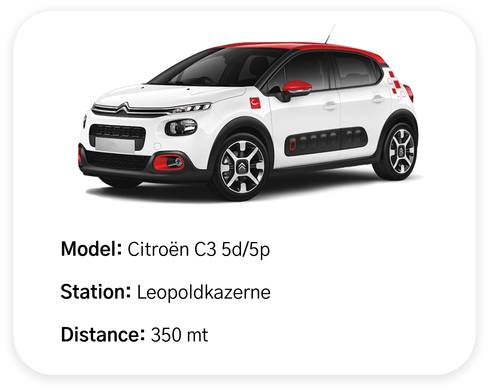
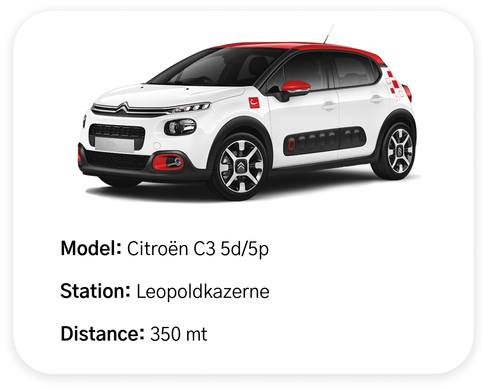

Foundations
This design system demonstrates core foundations that establish visual consistency and scalability across all components.
Typography
A clear hierarchy with 9 text styles, from hero titles (32px/Bold) to helper text (12px/Regular). Each style serves a specific purpose, creating rhythm and improving readability.
Primary Blue
The main brand color with full tonal range (50-800) used for primary actions, navigation elements, and brand-defining UI components.
Secondary Orange
Accent brand color with full tonal range (50-800) used for highlights, secondary actions, and complementary brand elements.
Neutral Colors
Gray scale palette used for backgrounds, text, borders, surfaces, and disabled states. These support structure and hierarchy.
Spacing
Four fixed tokens (12px, 24px, 32px, 64px) ensure consistent padding, margins, and alignment. These values create visual balance and predictability across all screens.

 
